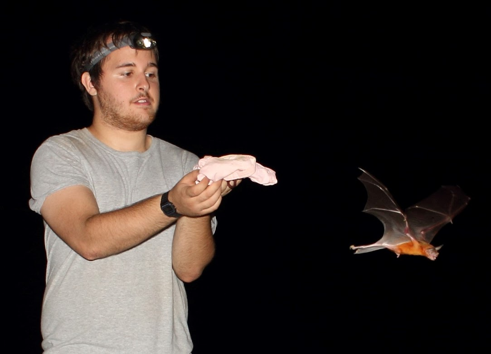

Matt Andres
PhD Student in Ecology, Evolution, and Behavior
University of Tennessee, Knoxville
Research Interests
I am a PhD student interested in studying sensory ecology, social behaviors, and disease ecology. In my research, I explore the ways in which animals navigate their complex environments using chemical cues. My research focuses on how animals use olfaction and other chemical senses to gather information from their environment, and how this sensory information drives behavior.
My primary interest lies in studying these phenomena in bats, particularly vampire bats and other members of the family Phyllostomidae. I am especially interested in how olfaction might serve as a mechanism for disease detection in vampire bats.
About My Work
I am particularly interested in the role of olfaction in social behavior and disease ecology. To explore this, I plan to characterize odor profiles using chemical analysis and conduct behavioral experiments to investigate how vampire bats respond to different odors. By understanding how vampire bats use olfactory cues to potentially detect diseases, my work aims to shed light on broader ecological and evolutionary processes, with important implications for conservation and disease management in bat populations.
Curriculum Vitae
For more details about my academic and professional background, you can view or download my CV from the link below: